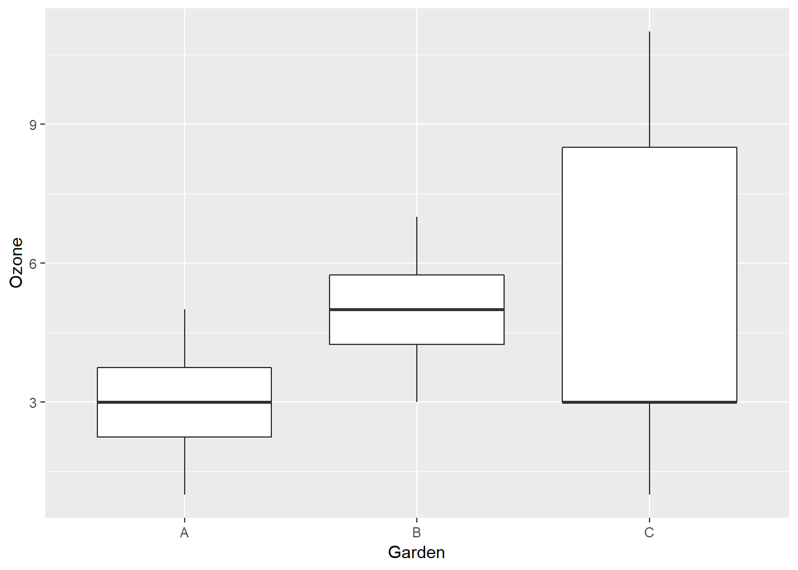
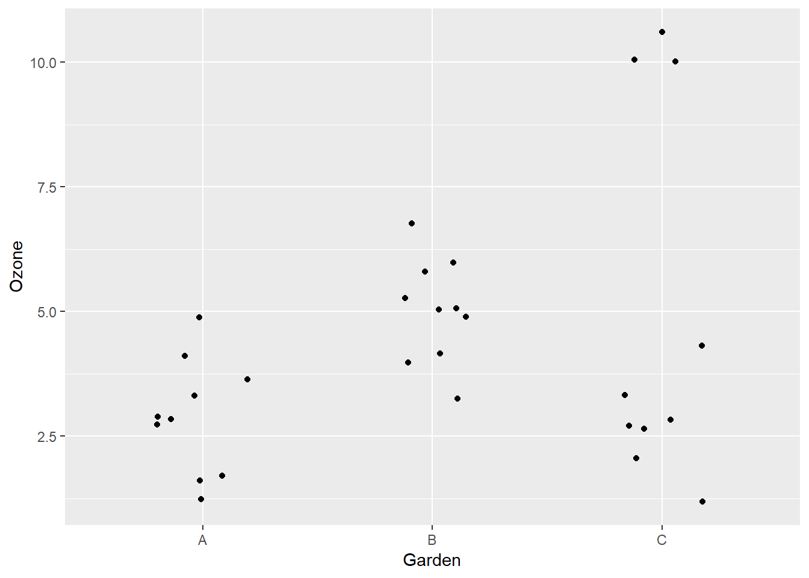

Which of the following statements are true?
For a one-sample \(t\)-test, if we reject the null hypothesis \(\mu = 10\) with a threshold \(\alpha = 0.01\), then the 99% confidence interval of the sample mean \(\bar{x}\) does not contain the value 10.
For the \(t\)-test comparing two samples with the null hypothesis \(\mu_A = \mu_B\), a smaller value \(p\) means that there is a greater difference between the means.
In experimental design, random assignment of treatments is intended to ensure that the differences measured between groups are due to the treatment.
(b), (c) and (e). Statement (a) is false, since the \(p\)-value is the probability to get a value of the test statistic equal or more extreme than the one observed if the null hypothesis is true. Statement (d) is false, since the \(p\)-value depends not only on the effect size, but also the variance of the data and the sample size.
For this exercise, we will use the gardens.csv dataset, which comes from Michael Crawley’s book Statistics: An Introduction Using R. These data represent ozone concentrations (in parts per 100 million or pphm) measured in three gardens (A, B and C) on different days.
gardens <- read.csv("gardens.csv")Here’s one option using boxplots:
library(ggplot2)
ggplot(gardens, aes(x = Garden, y = Ozone)) +
geom_boxplot()
Here is a graph of individual points with geom_jitter. This is like a geom_point, but it moves points by a small random amount on the x axis to differentiate points with the same y:
ggplot(gardens, aes(x = Garden, y = Ozone)) +
geom_jitter(width = 0.2)
library(dplyr)
group_by(gardens, Garden) %>%
summarize(mean(Ozone), sd(Ozone))## # A tibble: 3 x 3
## Garden `mean(Ozone)` `sd(Ozone)`
## <fct> <dbl> <dbl>
## 1 A 3 1.15
## 2 B 5 1.15
## 3 C 5 3.77Garden C has a much greater standard deviation. But more importantly, the mean of 5 is not a typical value, since we have seven points between 1 and 4, and three between 10 and 11.
t.test(Ozone ~ Garden, data = filter(gardens, Garden != "C"),
conf.level = 0.99)##
## Welch Two Sample t-test
##
## data: Ozone by Garden
## t = -3.873, df = 18, p-value = 0.001115
## alternative hypothesis: true difference in means is not equal to 0
## 99 percent confidence interval:
## -3.4864203 -0.5135797
## sample estimates:
## mean in group A mean in group B
## 3 5The estimate of \(\mu_A - \mu_B\) is -2 with a confidence interval (-3.5, -0.5). The null hypothesis is rejected.
As we saw above, the two gardens have a similar distribution in ozone concentration, except that the mean of garden B is higher. Therefore, the \(t\)-test comparing the means is a good description of the difference between the two.
t.test(Ozone ~ Garden, data = filter(gardens, Garden != "B"),
conf.level = 0.99)##
## Welch Two Sample t-test
##
## data: Ozone by Garden
## t = -1.6036, df = 10.673, p-value = 0.138
## alternative hypothesis: true difference in means is not equal to 0
## 99 percent confidence interval:
## -5.897603 1.897603
## sample estimates:
## mean in group A mean in group C
## 3 5The estimate of \(\mu_A - \mu_C\) is -2 with a confidence interval of (-5.9, 1.9). The null hypothesis is not rejected.
The difference between the means of A and C is the same as the means of A and B, but garden C has a greater variance, which explains why the difference is not significant. However, as we saw above, the mean is not a good description of the data in garden C and the distribution of ozone concentration is far from normal. Therefore, the \(t\)-test is probably not a good description of the difference between the two groups.
We can save the result of a \(t\)-test in a variable, for example:
res_t <- t.test(Ozone ~ Garden, data = filter(gardens, Garden != "C"),
conf.level = 0.99)Then, we can access different parts of that result with the $ operator.
res_t$p.value## [1] 0.001114539res_t$estimate## mean in group A mean in group B
## 3 5Create a function that takes one argument, which is the result of a \(t\)-test (performed on 2 samples), and that displays the estimate of the difference between the means with its confidence interval. Round the numbers to one decimal place. For example, for the result res_t above, the function should produce the text: “-2 (-3.5, -0.5)”.
Hint
Use the round function to round a numeric variable.
The paste0 function allows you to paste numbers and character strings together. For example:
t <- 6
paste0("It is ", t, " o'clock.")## [1] "It is 6 o'clock."Note: The function paste works in the same way, but adds a space between each element.
Here’s one possible function:
show_confint <- function(result) {
estime <- round(result$estimate[1] - result$estimate[2], 1)
conf_min <- round(result$conf.int[1], 1)
conf_max <- round(result$conf.int[2], 1)
paste0(estime, " (", conf_min, ", ", conf_max, ")")
}
show_confint(res_t)## [1] "-2 (-3.5, -0.5)"Give one example of an experiment where the results could be analyzed with a paired sample \(t\)-test.